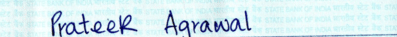

The input should be in the format given as shown in the images
This demo is based on TrOCR mode, which is an encoder-decoder model, consisting of an image Transformer as encoder, and a text Transformer as decoder.
Intended uses & limitations:You can use the raw model for optical character recognition (OCR) on single text-line images.
